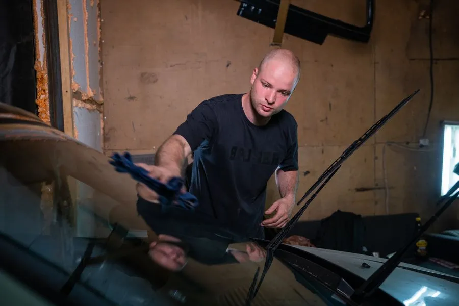

New glass, set in fresh urethane, at your address — with any required camera recalibration quoted in the same number.

Windshield replacement in Haverhill means removing glass that can no longer be repaired and bonding a new panel into the vehicle body. We do it at your home or workplace anywhere from Bradford to Groveland, usually within a day or two of your call, and you drive the car once the adhesive has reached safe strength.
The trim and wipers come off first, then the old urethane bead is cut through with a cold knife or wire tool and the damaged glass is lifted out on suction cups.
What happens next is the part that separates a good install from a bad one. The pinch weld — the painted channel the glass bonds to — gets scraped back to a thin, even layer of old urethane, and any scratched bare metal gets primed. Skip that and you get rust under the glass in two or three New England winters.
Fresh urethane is laid in one continuous bead, the new windshield is set, and the glass is pressed to the correct depth. Then it cures. Nothing about that last step can be rushed, which is why we quote drive‑away time honestly instead of promising you the car back in forty minutes.
Four situations put you past the point of repair. A crack longer than about three inches running into the area your wipers sweep in front of the driver. A crack that has reached the edge of the glass, where the structural bond lives. Several cracks spidering from one impact or crossing each other. Or damage sitting squarely in your sightline, where even a good resin repair leaves a visible blemish you would be looking through every day.
There is a fifth: a previous replacement that was done badly. Wind noise at highway speed on I‑495, or a damp passenger footwell after rain, usually means the urethane seal has failed and the glass needs to come out and go back in properly.
Almost always it starts with a stone. Sand and grit thrown from the road surface hits at highway speed and punches a small cone into the outer glass layer. Haverhill sits at the junction of I‑495 and Route 125 with heavy truck traffic, and the sanding trucks that keep those roads passable from December through March leave a lot of loose grit behind.
That chip then becomes a crack through thermal stress. A windshield is two glass layers bonded to a plastic interlayer, and the layers expand at slightly different rates. Point a defroster at full heat onto glass sitting at 15 degrees and the inner layer grows while the outer one does not — the existing flaw is the weak point, and it runs.
With roughly 35 inches of snow a year and temperatures that swing from single digits to the nineties, Haverhill gives glass a lot of chances to fail. That is the real reason a chip you have been ignoring since September becomes a January emergency.
The single biggest factor is whether there is a camera behind your rearview mirror.
| Factor | What it does to the price |
|---|---|
| No driver‑assist camera | $250–$500 for most common sedans and older vehicles |
| ADAS camera fitted | $550–$1,050 once recalibration is included |
| Recalibration type | Static $150–$300, dynamic $100–$250, both $250–$600 |
| OEM glass required | $900–$1,500+ on luxury and some newer vehicles |
| Built‑in extras | Rain sensors, heating elements, and heads‑up display all add cost |
| Mobile service | Commonly adds $50–$150 at other shops — ask if it is in your quote |
One local caveat worth repeating: labour in the Boston metro area runs well above the national average, so an online estimator using national numbers will quote you low for Haverhill. And if you are claiming on comprehensive coverage, what you actually pay may be far less than the table above.
Massachusetts treats glass under comprehensive, and contrary to a very persistent myth, glass deductibles are entirely legal here. Plenty of older policies carry no glass deductible; plenty of newer ones do, precisely to keep premiums down. Look at your declarations page before assuming.
Repair is the better outcome whenever it is genuinely available. It costs a fraction as much, takes half an hour, and keeps the factory bond and factory glass in your car — a seal no aftermarket install will ever quite match.
The honest boundary is size, position, and age. Chips up to about a quarter, single cracks up to roughly three inches, sitting outside your direct sightline, and reasonably fresh — those repair well. Once dirt and moisture have worked into a chip that has been there since last spring, the resin cannot bond cleanly and the repair stays visible.
Everything past that line is a replacement, and stretching the definition helps nobody. If your damage is repairable we will tell you, even though it bills a lot less. See chip and crack repair in Haverhill for what that job involves.
It depends on the urethane and the weather, not on the shop being generous. Most modern adhesives reach safe drive‑away strength in about an hour in mild conditions, but cold slows curing considerably, so a January appointment in Haverhill needs more patience than a July one. We tell you the actual time for the product we used that day rather than quoting a best case.
Glass claims go through comprehensive coverage, which covers damage that is not a collision, and they are generally treated differently from at‑fault accident claims under the Massachusetts Safe Driver Insurance Plan. That said, how an individual insurer weighs comprehensive claim frequency is their business, so it is a fair question to put to your agent before filing. We can quote you both ways — through insurance and cash — so you can compare.
Insurers commonly steer policyholders toward a network shop, but you are the one choosing who works on your vehicle. If you would rather use a local Haverhill installer, say so when you open the claim. We will work directly with the adjuster on the paperwork either way.
Quality aftermarket glass is manufactured to the same federal safety standards as original equipment and is the sensible choice on most vehicles. Where it matters is on cars with acoustic interlayers, heating elements, heads‑up displays, or camera brackets with tight tolerances — there, original manufacturer glass is sometimes genuinely required for the systems to work correctly. We will tell you which category your vehicle falls into before ordering anything.
Yes, with adjustments. We use adhesives rated for cold application and we extend the drive‑away time rather than pretending the cure is faster than it is. What we do need is a spot where the vehicle can sit undisturbed and reasonably sheltered while it sets — a driveway is fine, a snowbank is not. If conditions are genuinely unworkable we will say so and reschedule rather than deliver a bad bond.
Have your year, make, and model handy, and check whether there is a camera behind the mirror. That is everything we need to give you a real number on the first call.
Call (351) 900-7501 Now